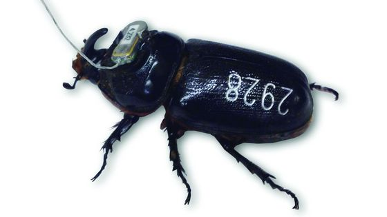

Rhino beetle radios lead to new breeding sites on Guam


-
02 Mar 2016
- By Jasmine Stole - jasmine@mvguam.com - Variety News Staff
HAGÅTÑA (The Guam Daily Post) — Coconut rhinoceros beetle researchers outfitted 34 of the pests with a new accessory in August 2015 hoping to find out more about the invasive insect’s habits in Guam.
Led by University of Guam entomologist Aubrey Moore, researchers glued miniature radio transmitters to the rhino beetles, anticipating that the beetles would lead them to obscure breeding sites, according to a release. The beetles were released at the UOG experiment station in Yigo and at Asan Beach Park and tracked for a 10-day field trial.
The team tracked most of the beetles to coconut trees that had already been damaged, according to the release. Some beetles flew beyond the range of the receivers and were never recovered. Several beetles led researchers to “cryptic breeding sites,” including a rotting branch from a breadfruit tree about 20 feet above ground.
Three other beetles were also found there, which suggests the beetles were establishing a new breeding site. The rhino beetle is known to breed in decaying green waste, like the rotting breadfruit branch. Beetle grubs feed on decomposing organic matter and do not do damage, Moore said. It is adult beetles that bore through the trunk of the coconut tree to feed on the tree’s sap which damages the coconut trees.
“It is very likely that the breadfruit branch was broken during Typhoon Dolphin, which visited Guam in May 2015,” Moore said in a release. “If this is the case, there must be thousands of new, miniature breeding sites in Guam’s jungles resulting from typhoon damage. These breeding sites will be generating large numbers of adult rhino beetles within the next several months.”
None of the beetles with transmitters flew into the pheromone traps, which may mean that the pheromone traps are ineffective for population control but useful for detecting and observing the beetles.
The transmitters cost about $120 and could track the beetles within a 500-meter range, Moore said. “They didn’t fly too far. They flew a few hundred meters. About half of them we found in tree tops, about half we found on the ground,” he said.
Moore addressed new possible breeding sites during a November meeting of the Guam Invasive Species Council. Moore said a lot of breeding sites were generated after Typhoon Dolphin. The government collected more than 20,000 cubic yards of green waste from roads and from residents who cleaned their yards days after the typhoon passed. Moore suggested more green waste lay in inaccessible jungle areas, making for more potential breeding sites for the beetle.
Because many breeding sites from the typhoon are inaccessible, current tactics of sanitation, trapping and applying fungus will do little to prevent an islandwide “population explosion,” according to Moore.
“We’re right in the middle of an outbreak now,” Moore said. “The grubs were feeding on all the dead stuff and now they’re starting to come out. My big fear is that these beetles are going to start attacking the coconuts en masse, killing even more coconuts.”
The study using radio transmitters may help other islands that do not have the large rhino beetle population Guam has, like in Hawaii where the beetle population is found in one area only. The island can track with radio transmitters and eradicate them.
Guam’s best chance to eradicate the rhino beetle is likely finding a virus to knock out the population, Moore said.
While viruses targeting rhino beetles have been used in other areas — and knocked out 90 percent of the rhino beetles in those areas — Moore said the Guam beetle is genetically different and seven viruses that have been tried here did not work. He is working to find a virus made to eliminate the genetically different rhino beetles here.
Through DNA testing, they found the “super beetle” in Guam has spread to other islands including Papua New Guinea, Hawaii and the Solomon Islands, according to Moore.
Last week, the government declared Invasive Species Awareness Week in an effort to shed light on the effects invasive critters have on the island and what is being done to curb the problem.
According to Roland Quitugua, operations chief for the rhino beetle eradication program at UOG, specially-sized tekken nets used over green waste piles are doing well at catching the rhino beetles. The nets have about a 75 percent “catch rate,” Quitugua said. He estimated fewer than 20 percent of the island’s coconut trees have been damaged and attributed the number to eradication methods like traps, viruses and the nets.
Moore worked on the radio transmitter feasibility study with Matthew Siderhurst, Eastern Mennonite University’s Kat Lehmann and Diego Barahona, USDA’s Pacific Basin Research Center’s Domenick Skabeikis and UOG technician Ian Iriarte.
A similar study was done in Taiwan in 2009. Erin McCullough, used miniature radio transmitters to assess movement patterns in the giant rhino beetle, according to her study published in the Journal of Insect Behavior in 2012.